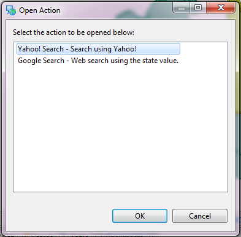

Document view¶
The Document view shows attachments, links and hotlinks associated with the selected layer or feature.

Documents¶
The documents are presented in a tree-table structure. Documents are grouped into folders that represent their associated feature or layer.
Within each folder several kinds of information are displayed:
 - File Document (or the icon of the operating system’s default program for file type)
- File Document (or the icon of the operating system’s default program for file type)
 - Web Document
- Web Document
 - Action Document
- Action Document
Some layers and features support storing of documents as attachments. Attachments are copied into the application and managed along with the resource.
For features, specific attributes can be marked as a hotlink to reference a document. Hotlinks that are not currently set will show up as “Unassigned”.
Attach¶
The Attach... button is used to attach a document to the selected feature or layer.
Fig. Add attachment dialog
- Type - used to determine the type of attachment.
- File - used to set the file to be attached.
- Set as template - used to mark the attachment as a template.
- Label - used to set a label.
- Description - used to set a description.
- Open - used to open the file set to be attached.
- Browse... - used to open a file selection dialog and select a file to be attached.
- New... - used to create a new file from a template and set it as the file to be attached.
- Attach - used to save the attachment.
- Cancel - used to cancel adding the attachment.
Link¶
The Link... button is used to link a document to the selected feature or layer.
A link can either be a file link or a website link as shown below. Selecting the Type determines what will be linked.
Fig. Add file link dialog
- Type - used to determine the type of link.
- File - used to set the file to be linked.
- Label - used to set a label.
- Description - used to set a description.
- Open - used to open the file set to be linked.
- Browse... - used to open a file selection dialog and select a file to be linked.
- New... - used to create a new file from a template and set it as the file to be linked.
- Link - used to save the link.
- Cancel - used to cancel adding the link.
Fig. Add web link dialog
- Type - used to determine the type of link.
- URL - used to set the website to be linked.
- Label - used to set a label.
- Description - used to set a description.
- Open - used to open the website set to be linked.
- Link - used to save the link.
- Cancel - used to cancel adding the link.
Edit¶
The Edit... button is used to update the selected document.
For attachments and links, the same dialog shown above will be opened in edit mode to allow updating inputed values.
For hotlinks, a dialog below will be shown depending on the type.
Fig. Edit file hotlink dialog
- Type - used to display the type of hotlink.
- Value - used to set the file to be hotlinked.
- Attribute - used to display the attribute name.
- Label - used to display the label.
- Description - used to display the description.
- Open - used to open the file set to be linked.
- Browse... - used to open a file selection dialog and select a file to be hotlinked.
- New... - used to create a new file from a template and set it as the file to be hotlinked.
- OK - used to save changes.
- Cancel - used to discard changes.
Fig. Edit website hotlink dialog
- Type - used to display the type of hotlink.
- Value - used to set the website URL to be hotlinked.
- Attribute - used to display the attribute name.
- Label - used to display the label.
- Description - used to display the description.
- Open - used to open the website set to be linked.
- OK - used to save changes.
- Cancel - used to discard changes.
Edit action hotlink dialog
- Type - used to display the type of hotlink.
- Value - used to set the attribute value.
- Action and Go - used to select and perform an action on the attribute value.
- Attribute - used to display the attribute name.
- Label - used to display the label.
- Description - used to display the description.
- OK - used to save changes.
- Cancel - used to discard changes.
Open¶
The Open button is used to open the selected document.
File: Opened using the default system application
Link: Opened using your web browser
Action: Opened as defined by the action.
- Action referencing notepad {0} opens in notepad
- Action resulting in a web links opened in the system browser
- Action resulting in a file link opens in default system application
The Open Action dialog is used if more than one hotlink action is defined for an attribute.
Open Action Dialog
Save As¶
The Save As... button is used to save a new copy of an attachment document.
Clear¶
The Clear button is used remove the document reference from the selected hotlink attribute.
For file hotlinks, the referenced file will not be removed from disk, the reference is simply cleared.
Delete¶
The Delete button is used remove the selected attached or linked document.
For attached files, a confirmation message will be shown as the file will be removed from disk. For linked files, the referenced file will not be removed from disk, the reference is simply cleared.
Related reference
Related tasks